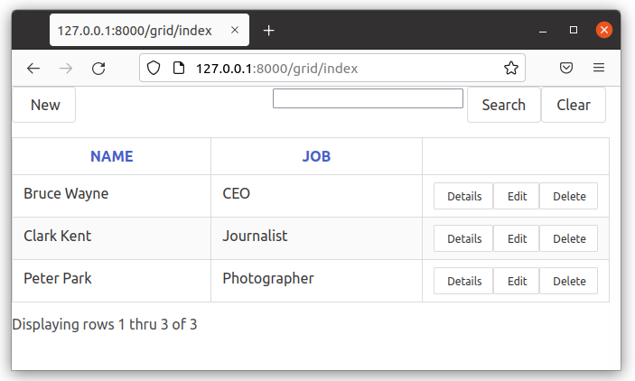

表格（Grid）
py4web附带了一个 Grid 对象，提供表格和 CRUD（创建、更新和删除）功能。这使您能够快速安全地提供数据接口。由于它也是高度可定制的，因此它是大多数 py4web 应用程序的基石。
主要特点
带删除确认的完整的 CRUD 功能
单击列标题进行排序 - 再次单击以进行降序排序
分页控制
内置搜索（可以使用 Search_queries 或 Search_form ）
操作按钮- 带文本或不带文本
操作前与操作后（在每行添加自己的按钮）
本地格式的表格日期
按类型的默认格式，以及用户自定义设置（覆盖默认值）
提示
Jim Steil 在 https://github.com/jpsteil/grid_tutorial 上制作了一份非常出色的表格（grid）教程。强烈建议您在有任何疑问时查阅该教程，同时您也能在其中找到许多实用的示例、提示与技巧。
grid 的基本示例
在这个简单示例中，我们将使用前面的 superhero 表制作了一个表格（grid）对象。
创建一个新的小型 app ，称其为 grid ，使用下面的内容进行修改：
# in grid/__init__.py
import os
from py4web import action, Field, DAL
from py4web.utils.grid import *
from py4web.utils.form import *
from yatl.helpers import A
# database definition
DB_FOLDER = os.path.join(os.path.dirname(__file__), 'databases')
if not os.path.isdir(DB_FOLDER):
os.mkdir(DB_FOLDER)
db = DAL('sqlite://storage.sqlite', folder=DB_FOLDER)
db.define_table(
'person',
Field('superhero'),
Field('name'),
Field('job'))
# add example entries in db
if not db(db.person).count():
db.person.insert(superhero='Superman', name='Clark Kent', job='Journalist')
db.person.insert(superhero='Spiderman', name='Peter Park', job='Photographer')
db.person.insert(superhero='Batman', name='Bruce Wayne', job='CEO')
db.commit()
@action('index', method=['POST', 'GET'])
@action.uses('grid.html', db)
def index():
grid = Grid(
formstyle=FormStyleDefault, # FormStyleDefault, FormStyleBulma, FormStyleBootstrap4, or FormStyleBootstrap5
grid_class_style=GridClassStyle, # GridClassStyle or GridClassStyleBulma or GridClassStyleBootstrap5
icon_style=IconStyleFontawesome, # IconStyle, IconStyleFontawesome, or IconStyleBootstrapIcons
query=(db.person.id > 0),
orderby=[db.person.name],
search_queries=[['Search by Name', lambda val: db.person.name.contains(val)]])
return dict(grid=grid)
添加一个新的文件 templates/grid.html ，其中包含以下基本内容：
[[=grid.render()]]
然后重启 py4web。如果您浏览 http://127.0.0.1:8000/grid/index ，您将得到以下结果：

它的布局很简朴，但非常有用。
主要问题是，默认情况下使用 no.css 样式表，请参阅 here 。但我们还没启用它！使用以下内容更改文件 templates/grid.tml：
<!DOCTYPE html>
<html>
<head>
<link rel="stylesheet" href="https://cdnjs.cloudflare.com/ajax/libs/font-awesome/5.14.0/css/all.min.css" />
</head>
<body>
[[=grid.render()]]
<body>
</html>
然后刷新页面。

现在情况好多了，有了 “详细信息” 、“编辑 ”和 “删除” 操作的适当图标。
我们还可以考虑使用 bulma.css ，请参阅 here 。在这种情况下，您需要将 __init__.py 里的 grid 对象更改为：
formstyle=FormStyleBulma, # FormStyleDefault or FormStyleBulma,FormStyleBootstrap4, or FormStyleBootstrap5
grid_class_style=GridClassStyleBulma, # GridClassStyle or GridClassStyleBulma or GridClassStyleBootstrap5
请注意，在这种情况下，您需要提前导入相应的 python 模块（我们已经在上面的第 4 行和第 5 行完成了）。如果使用默认的 no.css 样式，则不需要手动导入其样式模块（甚至不需要 formstyle 和 grid_ass_style 参数）。
您还必须使用以下内容更改文件 templates/grid.html ：
<!DOCTYPE html>
<html>
<head>
<link rel="stylesheet" href="https://cdnjs.cloudflare.com/ajax/libs/bulma/0.9.3/css/bulma.min.css">
</head>
<body>
[[=grid.render()]]
<body>
</html>
然后刷新页面。
这好多了，不是吗？
Bootstrap4 和 Bootstrap5 也有可用的样式，您可以在 Fontawesome、Bootstrap Icons 和自己编写的 CSS 的基本 IconStyle 之间更改图标样式。更多信息请参阅 自定义样式 一节
备注
这些只是展示 grid 内部工作原理的最小示例。通常，您应该从标准 _scaffold 应用程序的副本开始，其中已经定义了所有会话和身份验证内容。此外，您应该遵循代码的标准规则，比如将 db 定义放在 models.py 中等等。使用标准将使您的代码更简单、更安全、更易于维护。
此外，不要直接在应用程序的根操作（ root action ）上使用 grid 对象，因为它不会添加 'index' 路由。因此，在本例中，如果您浏览到 http://127.0.0.1:8000/grid ，主页将显示良好，但任何包含的操作都会导致页面不存在。
在 高级主题和示例 一章中，您可以找到更多示例，包括用 htmx 编写的主/细节 grid 示例。别忘了 https://github.com/jpsteil/grid_tutorial 上面 Jim Steil 的详细教程。
Grid 对象
class Grid:
def __init__(
self,
query,
search_form=None,
search_queries=None,
columns=None,
field_id=None,
show_id=False,
orderby=None,
left=None,
groupby=None,
headings=None,
create=True,
details=True,
editable=True,
deletable=True,
validation=None,
pre_action_buttons=None,
post_action_buttons=None,
auto_process=True,
rows_per_page=15,
include_action_button_text=True,
search_button_text="Filter",
formstyle=FormStyleDefault,
grid_class_style=GridClassStyle,
icon_style=IconStyleFontawsome,
T=lambda text: text,
):
query：待处理的 pydal 查询语句。
search_form：要作为搜索表单嵌入的 py4web 表单。若传入了 search_form ，则由开发者负责将筛选条件应用到传入的查询语句中。这一点与 search_queries 不同。
search_queries：用于构建搜索表单的查询列表的集合（列表的列表）。若使用了search_form，该参数将被忽略。
columns：要在列表页面显示的字段或列的列表，详见后文的 自定义列 章节。若为空，grid 将使用被查询表的所有可读字段。
show_id：是否在列表页面显示记录的 ID 字段。默认值为 None，此时会自动检测是否存在类型为 “id” 的字段（若有则显示）。
orderby：pydal 的排序字段或字段列表。用于控制 grid 的默认排序顺序。
left：若需关联其他表，在此处指定 pydal 的左连接表达式。
groupby：pydal 的分组表达式。用于对 grid 中的结果进行分组。
headings：列表页面使用的标题列表 —— 若未提供，则使用字段的标签作为标题。
create：控制 grid 是否允许创建记录。可取值为：True（显示按钮）、False（隐藏按钮）、URL 字符串，或自定义逻辑的可调用对象。
details：控制 grid 是否允许查看记录详情。可取值为：True、False、URL 字符串，或自定义逻辑的可调用对象。
editable: 控制 grid 格是否允许编辑记录。可取值为：True、False、URL 字符串，或自定义逻辑的可调用对象。
deletable：控制 grid 是否允许删除记录。可取值为：True、False、URL 字符串，或自定义逻辑的可调用对象。
required_fields：必须包含在 grid' 的查询语句和表单中的字段列表。用于确保某些字段始终被加载。
validation：可选的验证函数，被传入到创建和编辑表单中使用。
pre_action_buttons：要在标准操作按钮之前显示的操作按钮实例列表
post_action_buttons: 要在标准操作按钮之后显示的操作按钮实例列表
auto_process：布尔值 —— grid 是否应立即执行处理逻辑。若为 False，开发者必须在所有参数配置完成后调用 grid.process() 方法。
rows_per_page：每页显示的记录行数。默认值为 15。
include_action_button_text：布尔值，用于告知 grid 是否要在其内部的操作按钮上显示文本。
search_button_text：搜索表单的提交按钮上显示的文本。
formstyle：py4web 的表单样式（Form formstyle），用于在自动构建增删改查（CRUD）表单时为表单设置样式。
grid_class_style: 表格样式类（GridClassStyle），用于覆盖 grid 渲染样式的默认设置。允许你为 grid 的特定位置指定要应用的类或样式。
icon_style: 默认值是 IconStyleFontawsome。用来获取图标的 css 样式。其它可选值：IconStyle, IconStyleBootstrapIcons。
T: 可选的多元化对象，用来翻译某些字符串。
(*) 参数 details 、 editable 和 deletable 也能接受一个可调用的函数，grid 中当前的 row 对象会被作为参数传递给那个函数。这很有用，因为你能依据 row 对象中的值来启用或禁用某个操作按钮。 换句话说，你能使用一个如下的表达式，而不是提供一个简单的 boolean 类型的值；
deletable=lambda row: False if row.job=="CEO" else True,
也请参考后面的 使用 “可调用参数”
搜索和过滤
这有两种构建搜索表单的方法：
为 search_queries 参数提供一个列表
构建自己的自定义搜索表单
构建一个搜索表单。如果列表中有多个搜索查询，它还将生成一个下拉列表，以选择要搜索的搜索字段
但是，如果这没有给你足够的灵活性，你可以自己提供。
CRUD 设置
grid 对象利用 py4web Form 提供 CRUD（创建、读取、更新和删除）功能。您可以在 grid 对象实例化期间通过设置 create/details/editable/deletable 来关闭 CRUD 功能
此外，您可以为 create/details/editable/deletable 参数提供一个单独的 URL，以绕过自动生成的 CRUD 页面，打开自己处理细节的页面。
自定义列
如果 grid 对象不涉及多表联接（join），仅展示来自单个数据表的结果，那么可以这样添加自定义列：
from py4web.utils.grid import Column
from yatl.helpers import A
columns = [
db.person.id,
db.person.superhero,
db.person.name,
db.person.job,
Column("Web Site", lambda row: f"https://{row.superhero}.com"),
Column("Go To", lambda row: A("link", _href=f"https://{row.superhero}.com"))
]
grid = Grid(... columns=columns ...)
请注意，在这个例子中，第一列是常规字段，第五列有一个标题 “Web Site” ，由当前 row 对象生成的 URL 字符串当成此列的值。最后一列有一个标题 “Go To” ，并使用 A helper 生成实际的可点击链接当成此列的值。结果如下：

请注意，我们还使用了如前所述 deletable 参数，以便仅对 Batman 禁用和隐藏 “Delete” 按钮。
警告
不要在使用它们的控制器方法之外定义列，否则每次用户按下浏览器的刷新按钮时，表的结构都会发生变化！
原因是每次 grid 对象显示时，它都会通过向其中添加操作按钮来修改 “columns” 变量（在 grid 中）。因此，如果列是在控制器方法之外定义的，它只会不断添加操作列。
使用模板
显示 grid 对象或 CRUD 表单
[[=grid.render()]]
您可以像普通表单一样自定义 CRUD 表单布局（请参阅 自定义表单 ）. 因此，您可以使用以下结构：
[[form = grid.render() ]]
[[form.custom["begin"] ]]
...
[[form.custom["submit"]
[[form.custom["end"]
但请注意，在处理自定义表单布局时，您需要知道是要显示 grid 对象还是 form 表单。使用以下内容来决定：
[[if grid.action in ['details', 'edit']: ]]
# Display the custom form
[[form = grid.render() ]]
[[form.custom["begin"] ]]
...
[[form.custom["submit"]
[[form.custom["end"]
[[else:]]
[[grid.render() ]]
[[pass]]
Grid 的 'path' 参数：新、旧用法
在 py4web 早于 v1.20240501 的先前版本中， Grid 对象的构造函数需要一个 path 参数。这被用来帮助 grid 对象解析 URL 并决定启用的 action （例如， select、 edit、 details、 delete 等）。
旧用法示例：
grid = Grid(
path=request.path,
query=(db.person.id > 0),
# ...other parameters...
)
但是，从 py4web 1.20240501 及更高版本开始，不再需要或支持 path 参数。 grid 现在根据 py4web 请求上下文和 URL 参数自动确定当前操作和路由。您只需省略 path 参数，并按如下方式使用构造函数：
新用法示例：
grid = Grid(
query=(db.person.id > 0),
# ...other parameters...
)
此更改使 API 变得更简单，并且更少出错。现在，所有路由和操作处理都由 py4web 的@action 装饰器和请求上下文管理，因此您不需要手动传递路径。
如果要更新旧代码，只需从 Grid 实例化中删除 path 参数即可。
Grid 模式参数（路径替换）
Grid 对象使用一个 mode 变量，该变量通过 py4web 中的 request.query 对象传递。此变量决定 grid 将呈现什么类型的页面或表单。 mode 的可能值有：
select: 显示列出所有记录的主表（如果未指定，则默认）。
new: 显示一个表单以创建新记录。
details: 显示一个只读表单，其中包含单个记录的详细信息。
edit: 显示一个表单以编辑现有记录。
delete: 显示删除记录的确认表单。
grid 会自动从 URL 查询参数中解析 mode 。例如，如果您访问 /myapp/mygrid?mode=edit&id=5 ，grid 将呈现 id 为 5 的记录的编辑表单。如果未指定 mode ，则 grid 默认使用 select 模式并显示主表视图。
如果要自定义导航或操作，可以生成链接或按钮，在查询字符串中设置所需的模式和 id 。
自定义样式
您可以为 grid 提供自己的表单样式或 grid 样式类以及样式。
formstyle 用于 grid 的某些部分。
默认的 GridClassStyle 基于 no.css ，主要使用样式来修改网格的布局。我们已经看到，可以使用其他 class_style ，特别是 GridClassStyleBulma 或 GridClassStyleBootstrap5。
您甚至可以构建自己的 class_style ，以便与您选择的 css 框架一起使用。
使用 icon_style ，您可以自定义所使用的图标字体。目前，存在以下情况：
使用此功能请添加 fontawesome 图标字体 CSS 。类似
icon-edit-button的 css 类，您可以为其编写自己的 css 。可以将 Bootstrap Icons 用于您的 html 模板。
使用 “可调用参数”
对 py4web 最近的一项改进是，允许你传递一个 可调用对象 来代替 GridActionButton。这允许你更容易地改变标准或自定义的 Acion 的行为。
可调用对象能被用于以下参数：
details
editable
deletable
additional_classes
additional_styles
override_classes
override_styles
用法示例：
@action("example/<path:path>")
def example(path=None):
pre_action_buttons = [
lambda row: GridActionButton(
URL("test", row.id),
text="Click me",
icon=IconStyleFontawsome.add_button, # same as "fa-plus"
additional_classes=row.id,
additional_styles=["height: 10px" if row.bar else None],
)
]
post_action_buttons = [
lambda row: GridActionButton(
URL("test", row.id),
text="Click me!!!",
icon="fa-plus",
additional_classes=row.id,
additional_styles=["height: 10px" if row.bar else None],
)
]
grid = Grid(
path=path,
query=db.foo,
pre_action_buttons=pre_action_buttons,
post_action_buttons=post_action_buttons,
)
return dict(grid=grid.render())
引用字段
在 PyDAL 表中显示字段时，有时您希望显示比外键值更具描述性的字段值。使用 py4web grid 有几种方法可以处理这个问题。
PyDAL 字段定义的 filter_out - 下面是一个外键字段的示例
Field('company', 'reference company',
requires=IS_NULL_OR(IS_IN_DB(db, 'company.id',
'%(name)s',
zero='..')),
filter_out=lambda x: x.name if x else ''),
这将在 grid 中显示公司名称，而不是公司 ID
使用这种方法的缺点是，排序和筛选是基于员工表中的公司 id 字段，而不是公司名称
left join 并指定连接表中的字段-在 Grid 实例化的左参数上指定
db.company.on(db.employee.company == db.company.id)
您可以指定一个标准的 PyDAL 左连接，包括要使用的连接列表。现在公司名称字段可以包含在您的字段列表中，可以点击并排序。
您还可以指定一个查询，例如：
queries.append((db.employee.last_name.contains(search_text)) | (db.employee.first_name.contains(search_text)) | db.company.name.contains(search_text))
此方法允许您进行排序和筛选，但不允许您像 filter_out 方法那样将要显示的字段组合在一起
您需要确定哪种方法最适合您的用例。
带有复选框的 Grid
虽然 grid 本身不支持复选框，但您可以使用自定义列添加一列或多列复选框。您还可以添加 helper 逻辑（grid 使用 helpers 生成HTML），将其包装在 <form> 中，并添加一个或多个提交按钮。然后，您可以在选择按钮时添加逻辑来处理所选行。例如：
column = Column("select", lambda row: INPUT(_type="checkbox",_name="selected_id",_value=row.id))
@action("manage")
@action.uses("manage.html", db)
def manage():
grid = Grid(db.thing, columns=[column, db.thing.name])
# if we are displaying a "select" grid page (not a form)
if not grid.form:
grid = grid.render()
# if checkboxes selection was submitted
if request.method == "POST":
# do something with the selected ids
print("you selected", request.POST.get("selected_id"))
# inject a ``<form>`` and a ``submit`` button
grid.children[1:] = [FORM(
*grid.children[1:],
DIV(INPUT(_type="submit",_value="do it!")),
_method="POST",
_action=request.url)]
return locals()
请注意上述示例中的 request.POST.get("selected_id") 可以是单个 id（如果选择了一个）或 id 的列表（如果选择了多个）。